Last Updated: 2024-07-25
Background
At Datavolo, we are here to help you become a 10x Data Engineer for AI. Our product is powered by Apache NiFi; an easy to use, powerful, and reliable system to process and distribute data.
Before you begin building multimodal data pipelines to fuel your Advanced RAG applications, it is important to make sure you understand the fundamentals of working with Datavolo flow builder and its component types.
Scope of the tutorial
In this tutorial, you will learn about Datavolo's fundamental building blocks and how to use the UI to assemble a dataflow. You'll have a simple, but fully functional, pipeline running on Datavolo's cloud hosted environment by the end of the tutorial.
Learning objectives
Once you've completed this tutorial, you will be able to:
- Explain the function of the major component types; processors, connections, and FlowFiles.
- Construct a dataflow/pipeline with these components.
- Control the run-time lifecycle of your dataflow.
- Perform simple debugging and interrogation of FlowFiles in your pipeline.
- Utilize product documentation for components.
Prerequisites
- A Datavolo Cloud account. See Datavolo Cloud: Getting started.
- Optionally, writable access to an AWS S3 bucket.
About Datavolo tutorials
Datavolo tutorials are designed to get you up and running quickly by providing guided, hands-on educational resources.
Review the use case
This initial pipeline will solve a specific one-time function, but could be generalized to be a continuously running dataflow. We will follow the generally understood Extract - Transform - Load (ETL) pattern and perform the following logic.
Extract
The dataflow will retrieve a zip file that contains the works of William Shakespeare.
Transform
The dataflow will unzip the file to individually work on each included file – it willfilter out any non-text files for additional investigation.
For the text files, classify them as one of the following sizes based on their content's byte count.
small– when file size is <= 75 KBmedium– files > 75 KB and <= 150 KBlarge– any file > 150 KB
Load
Optionally, save the files to an S3 bucket using the content size classifications.
Connect to a runtime
Once logged into Datavolo Cloud, the Runtimes page will be presented. From here you can connect to an existing runtime or create a new one.
Existing runtime
If you, or someone else, have previously created a runtime for your use, simply click on its NAME (simple flow in the screenshot below for example) to launch it.
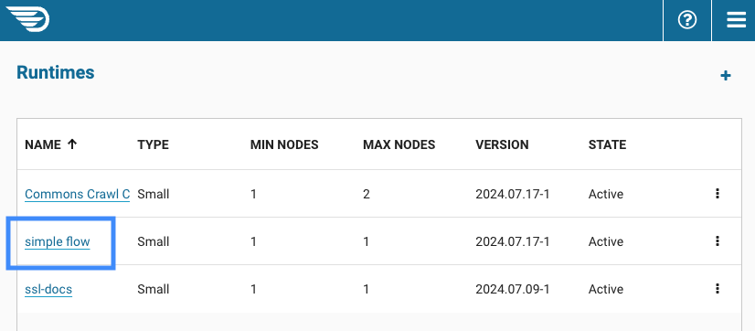
Create a runtime
To create a new runtime, click on the + sign on the far right of the page to launch the Create Runtime form. Add a Runtime Name and press Create at the bottom of the form. Leave Node type and Maximum nodes set to their default settings.
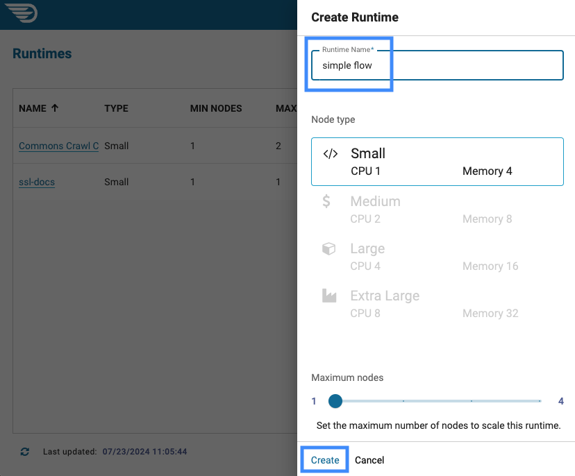
The new runtime will be listed as Creating initially.
Wait until this changes to Active and then click on the name (ex: simple flow) on the left.
Create a process group
You are now viewing the Datavolo UI. The large grid area that is likely empty, is called the canvas and is the home for the components we will be creating to implement our use case.
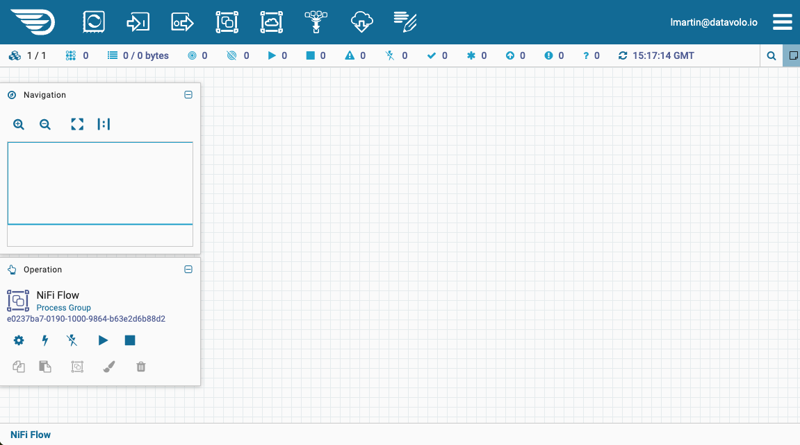
Drag and drop the third icon, Process Group, from the tool palette at the top of the page onto the canvas.
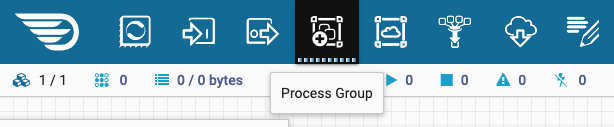
Once you release your pointer, a Create Process Group pop-up will appear. Add a Name and click Add.
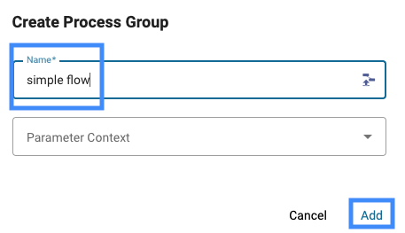
Right click on the new Process Group and select Enter Group on the contextual menu (or just double click on the Process Group).
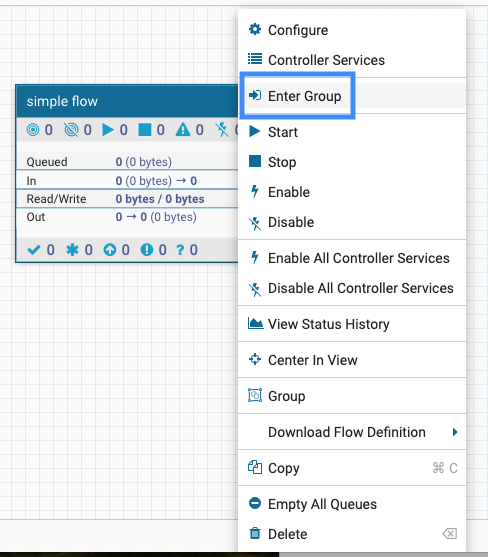
You have created a visual abstraction away from the top-level of the canvas which will allow us to focus on just this tutorial.
Definitions
What is Apache NiFi? | Datavolo Documentation says it best by simply stating, "NiFi is a powerful enterprise-grade dataflow management tool that supports any and all complex, multimodal data types and a wide variety of data sources and destinations." This same document identifies these fundamental concepts.
FlowFile | A FlowFile represents each object moving through the system and for each one, NiFi keeps track of a map of key/value pair attribute strings and its associated content of zero or more bytes. |
Processor | Processors actually perform the work including activities such as data routing, transformation, or mediation between systems. Processors can operate on zero or more FlowFiles in a given unit of work. |
Connection | Connections provide the actual linkage between processors. These act as queues and allow various processes to interact. |
In action
Let's understand by doing. Return to your empty canvas.
Add a processor
Hover your pointer over the first tool in the palette to see the Processor tooltip that surfaces.
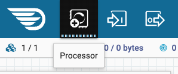
Click on the Processor tool and drag it onto the canvas and release your click. This will surface an Add Processor pop-up window. Type http in the Filter types search box in the upper right corner of this pop-up window, select InvokeHTTP in the updated list, and then click the Add link in the lower right corner.
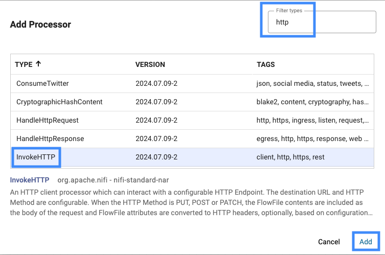
You selected this processor type as the use case is driving us to pull a zip file from a web link. The processor will be used to fulfill our Extract requirements. The canvas will now have this processor on it.
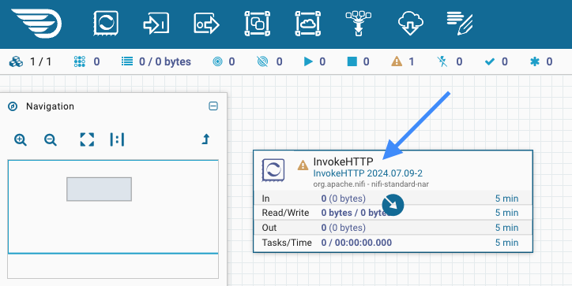
Configure the processor
Right click on the InvokeHTTP processor on your canvas to see a contextual menu and select View Documentation.
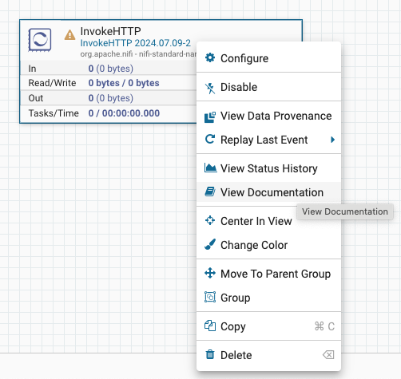
You should now see the documentation page for this processor type. The Description initially states that it "can interact with a configurable HTTP Endpoint" using a configurable destination URL. Find that required property in the Properties list of the documentation.
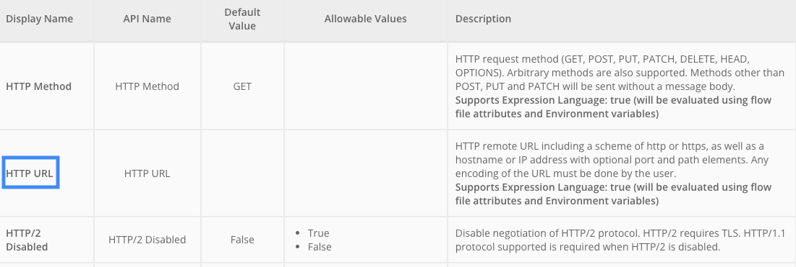
Click on Back to Processor link in the upper left corner to return to the canvas.
Double click on the processor to enter the Edit Processor pop-up window and select the Properties tab and update the empty HTTP URL value to the following.
https://github.com/lestermartin/events/raw/main/data/xevent/WillShakespeare.zip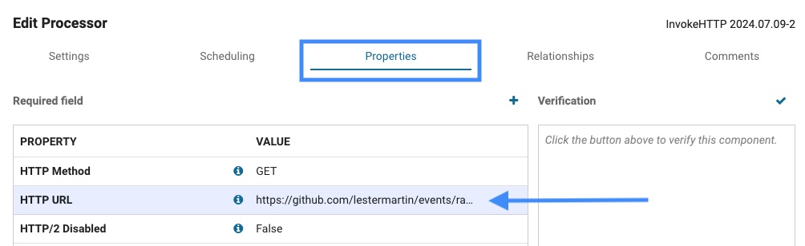
The concept of scheduling is out of scope for this initial tutorial, but essentially it is the configuration of how and when this processor should be invoked. Click on the Scheduling tab and modify Run Schedule from 0 sec to 5 min.
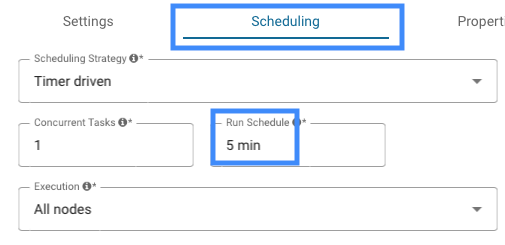
To help remind us of this concern later, click on the Settings tab and prefix the Name field with RUN ONCE and finally click on Apply to save the configuration changes.
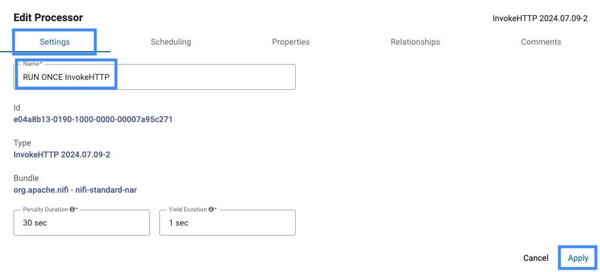
Add a second processor
As before, add another processor to the canvas. Since we are expecting a zip file to be retrieved in the initial processor, this time type UnpackContent in the Filter types search box and select the Type with the same name. Arrange the second processor below the original one.
Create a connection
Hover over the initial InvokeHTTP processor to notice a circle with an arrow inside that appears in the middle of the processor.

Click on the circle with the arrow inside and drag the pointer towards the bottom processor. It will initially create a red dotted line which indicates it is not ready to make a connection.
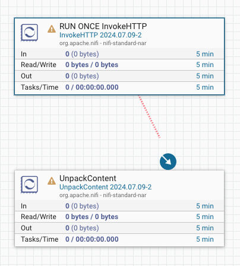
Once the pointer is over the second processor, the dotted line will turn green and a green border will appear around the processor the connection is being made to.
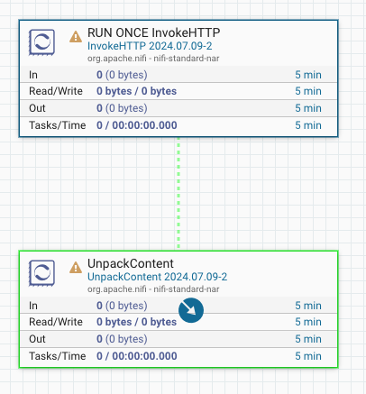
Release the mouse to see the Create Connection pop-up window and notice the From Processor and To Processor names. Check the Response box under Relationships and then click on Add to create the connection.
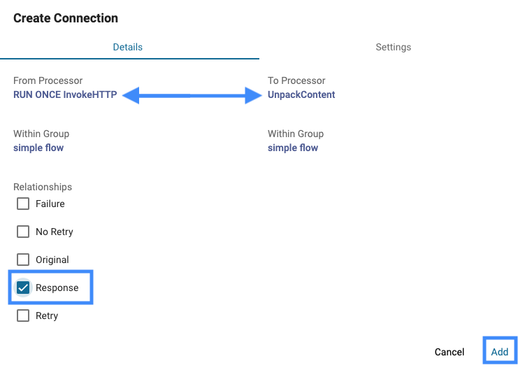
The connection is backed by a queue of FlowFiles that houses them until the next processor receives it. This queue is empty right now as we have not started any processing yet.
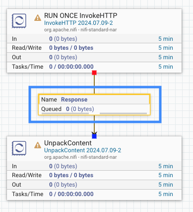
Relationships?
We will be discussing what a "relationship" is more fully in a future step of this tutorial, but at its simplest a relationship is the opportunity to create a connection between processors. That means data in the system flows through them. The following table is from the InvokeHTTP documentation that we surfaced earlier and acts as an example of what we are discussing.
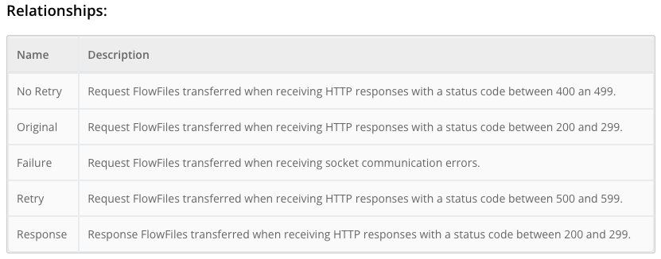
Open the Edit Processor configuration window for the InvokeHTTP processor and navigate to the Relationships tab. Check the terminate box for the Failure, No Retry, Original, and Retry (you will have to scroll down to see Retry) relationships. Click Apply to return to the canvas.
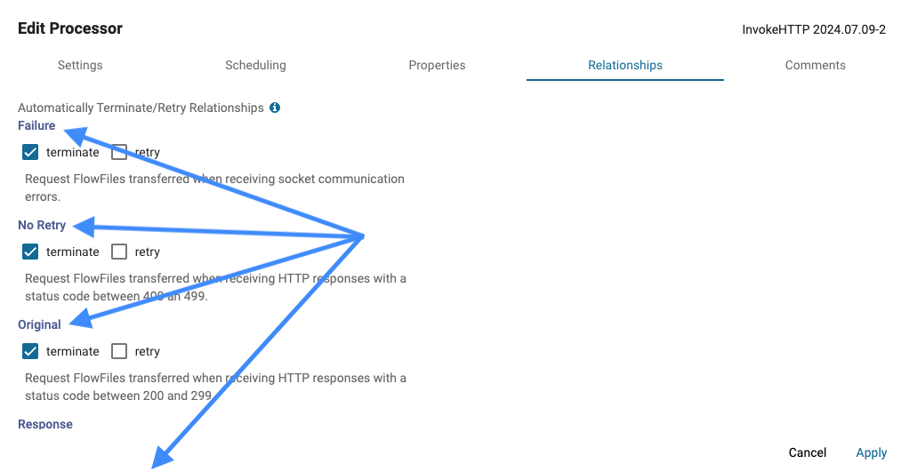
Not just dev-time
By this point, it might not be evident that the Datavolo UI melds dev-time and run-time into a live & interactive experience. You can initialize processing in the same UI as you have already been defining your data pipeline in.
In fact, each processor can be started (and stopped) individually from every other one. The component status bar is showing us, via the red square icon, that we have a single processor in a stopped mode. It also shows us we have another processor that is invalid (the yellow triangle).
This status bar details the status of the whole canvas which only contains the two processors we have added so far. You can see these status indicators on the processors themselves.
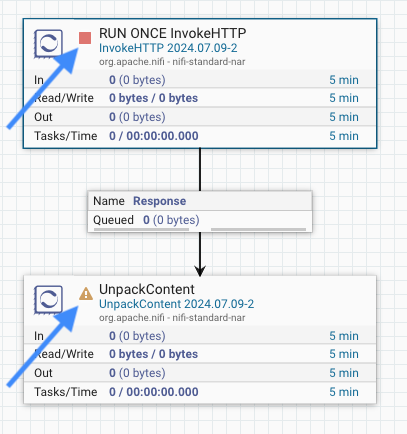
Begin processing
Let's start the initial InvokeHTTP processor whose job it is to go to the configured URL and retrieve the zip file we are expecting. Right click on the processor and choose Run Once on the context menu that surfaces.
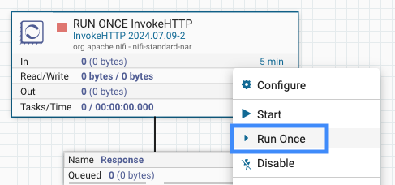
Identify FlowFiles
In a short period of time, you will notice that the InvokeHTTP processor is reporting in the processor's Out metric that it has emitted 1 FlowFile of 2.14 MB in size. That same FlowFile is now in the queue that backs the connection named Response leaving this processor.
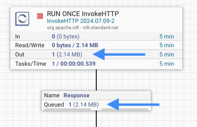
It is queued because the connection is going to a processor that is not running yet.
As a reminder, a FlowFile is like an envelope that contains a reference to the actual binary data that makes up the object flowing through the data pipeline (in this scenario, the one we are currently seeing is a zip file) AND attributes about the object. Here are a few of the attributes that will be present.
filename | A filename that can be used to store the data to a local or remote file system. |
uuid | A Universally Unique Identifier that distinguishes the FlowFile from other FlowFiles in the system. |
fileSize | The number of bytes taken up by the FlowFile's content. |
Right click on the Response connection's queue and click on List Queue from the context menu.
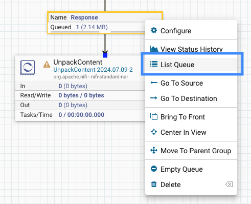
You will now see the single FlowFile listed that was retrieved by the InvokeHTTP processor.
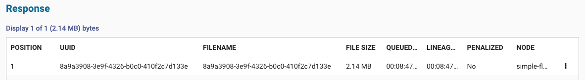
View attributes
Click on the vertical ellipsis to the far right of the entry and select View Details.
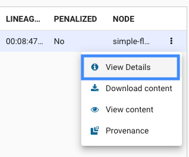
You will see the Details tab of the FlowFile pop-up window. The initial information under the FlowFile Details heading references the 3 attributes previously mentioned; filename, fileSize, and uuid. On your own, click on the Attributes tab and find these same 3 attributes along with all attributes present for this FlowFile.
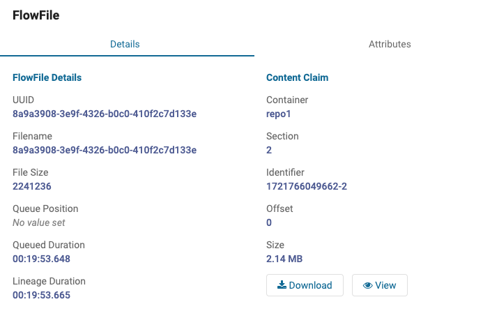
View content
Click on Click on the Download button at the bottom of the previous screenshot to save a copy of the file on your workstation. Add a .zip extension to the filename and verify there are 43 files inside the unzipped folder.
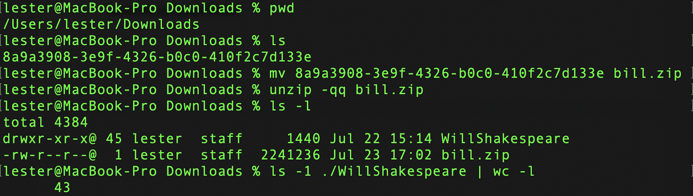
Optionally, explore the files in the unzipped folder.
The next step in the dataflow is to unzip the file that the FlowFile is tied to using the UnpackContent processor we added earlier.
Relationships
It might seem logical to just "start" the second processor now, but if you right click on it you will notice there is no option to do so. This is because it is marked as invalid – notice the yellow triangle next to its name. Hover over that icon and the issues that make it invalid will surface in a tooltip.
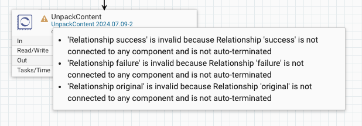
All 3 of these problems are essentially the same. They are stating that various "relationships" are invalid because they are "not connected to any component" or "not auto-terminated".
Here are the descriptions of the Relationships from the UnpackContent processor documentation. Reminder; right click on the processor and select View Documentation.
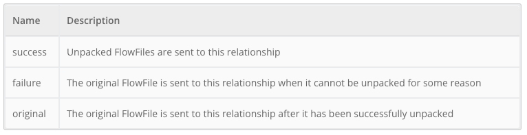
These "relationships" are basically the streams of information that a processor can emit FlowFiles into. All processors produce at least one relationship. Double click on the processor to pull up the Edit Processor pop-up and select the Relationships tab to see the list of the 3 relationships the UnpackContent processor produces; failure, original, and success. These are the same from the documentation.
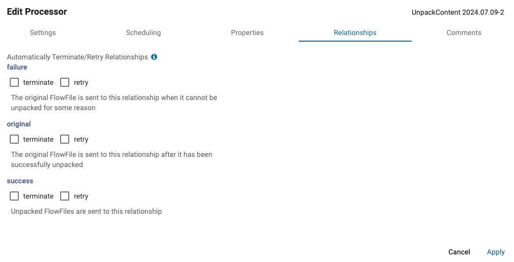
If the original FlowFile was useful in the dataflow for any other purpose, we could create a connection to another processor for that. As we don't need it, go ahead and auto-terminate it.
As we are NOT trying to make a perfect robust solution in this initial example, check the terminate box next to the failure relationship as well which will ignore any error scenario.
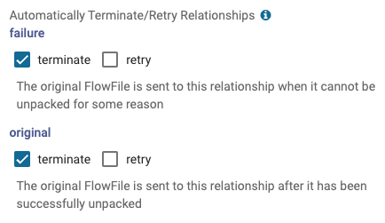
After you click on Apply and return to the canvas, you should only have a single configuration message being displayed now when you hover over the invalid icon.
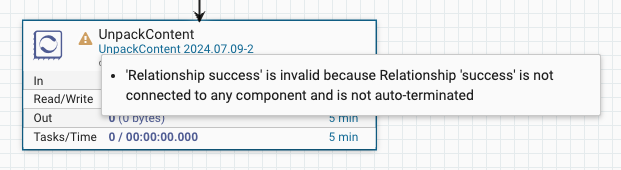
Connections
As we need to have a processor to assign the success relationship to AND knowing our use case indicates we only want to process text files, go ahead and add another processor to the canvas. This time select the RouteOnAttribute processor type that has the following description.
Make a connection to this new processor from the UnpackContent one and select the success relationship on the Create Connection window.
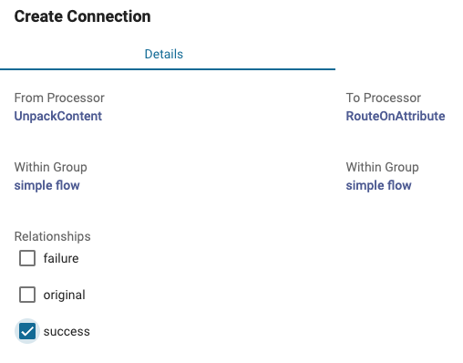
Queues
The lower part of your pipeline should look like this.
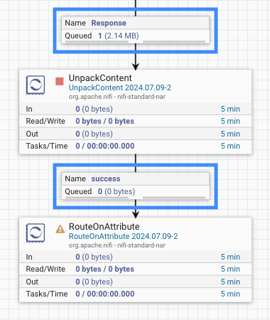
This shows the original FlowFile with 2.14 MB of content is still in the queue backing the connection coming into UnpackContent.
Aren't they the same thing?
It might sound like there are a lot of terms that really mean the same thing, but let's unpack them right now before we move on.
- Relationships are the output paths a FlowFile can be emitted through from a processor
- Connections are the coupling of a producing processor's relationship with a consuming processor
- Queues hold the FlowFiles until the consuming processor can perform its action
Easy-peasy! ;) Well, to make it more fun...
- Every processor produces 1, or more, relationships
- Each relationship can have multiple connections as multiple processors can consume each relationship
- Each connection can be configured to handle more than one relationship
But, we'll keep it easy as this is the "intro" tutorial!
Process the first queue
Start the UnpackContent processor and notice the FlowFiles coming into it will be cleared.
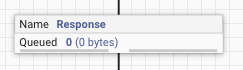
Also notice there are 43 FlowFiles in the queue backing the connection leaving this processor.
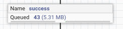
These represent the 43 files we saw earlier that were included in the original zip file. The 5.31 MB is the byte size of all of the unzipped files. Execute the List Queue feature and see that all 43 of the files are listed along with their physical filename and size.
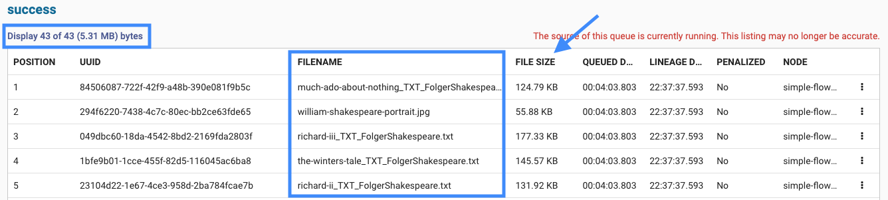
Verify the first few entries in the queue align with the filenames and sizes that you previously unzipped on your workstation.
View content
One way to view the contents of the binary data tied to the FlowFile is to click on the vertical ellipsis to the far right of the items in the List Queue output. From there, click on View content.
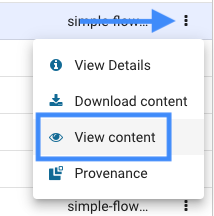
If the binary data is of a content type that Datavolo UI can visualize, it will be presented in a new browser tab.
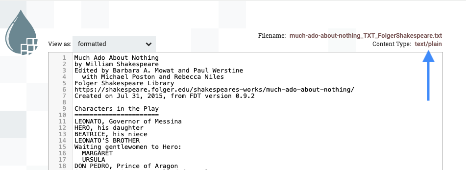
Close the newly opened browser tab when done reviewing the content.
The View and Download options are also available if you select View Details from the vertical ellipsis via the buttons at the bottom of the Content Claim section of the FlowFile pop-up window that surfaces.
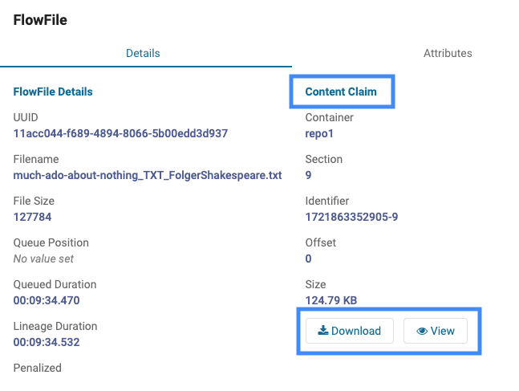
Routing options
With FlowFiles containing a reference to some binary content (such as the files we have been retrieving so far) AND attribute key-value pairs it is easy to imagine that making decisions on how a particular FlowFile is processed could depend on information in the content and/or the attributes.
For this initial flow we have to make decisions around the type of underlying content (i.e. text file or not) as well as the size of each. At first, that might suggest we need to start making routing decisions based on the binary content itself. Fortunately, there are attributes that already provide us with an easier way to answer these questions.
Route on attribute
Let's review the documentation for the RouteOnAttribute processor that is already in our flow.
Pull up the Edit Processor window for RouteOnAttribute and navigate to the Relationships tab. You will see there is only a single relationship present; unmatched.
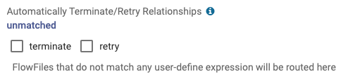
The message below the checkboxes suggests that we can provide some logic of our own to make routing decisions. The documentation confirms this in the Dynamic Properties and Dynamic Relationships sections.
Simply stated this means we can add a custom property and set its value to a user-defined expression that returns a boolean response. Any FlowFile that causes the expression to return true will then be routed down a dynamic relationship named after the custom property.
For our initial routing decision, our requirements tell us to "filter out any non-text file for additional investigation". Let's tackle the implementation for this step-by-step.
Determine criteria
Back in the List Queue screen, click on the vertical ellipsis to the far right of one of the FlowFiles and select View Details.
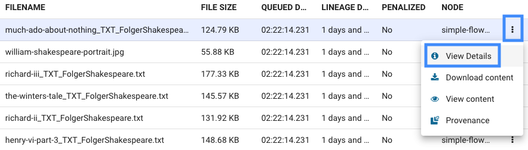
Navigate to the Attributes table and find the filename attribute. Notice the file name has an extension. Likely your's shows .txt as below, but not guaranteed.
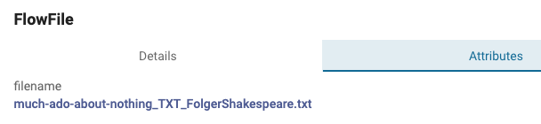
Next, we will write an expression that determines if the anticipated file extension is present.
Dynamic property
In the Properties tab of Edit Processor for the RouteOnAttribute processor, click on the + sign at the top right of the list of properties.
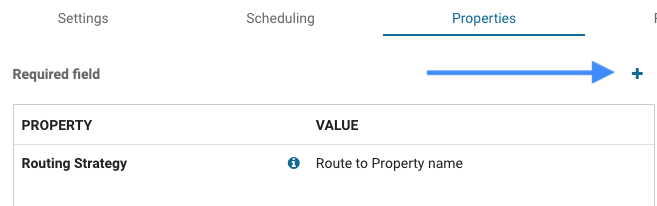
Enter isText in the Property Name field that surfaces in the Add Property pop-up window.
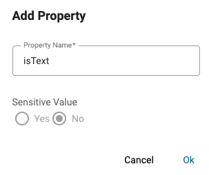
Click Ok to save it.
Expression language
You will automatically be routed into the property editor for this new dynamic (i.e. custom) property. Enter the following string into the editor.
${filename:endsWith('.txt')}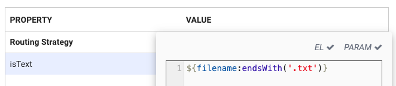
Click Ok to save the expression language and you will then see the new isText property listed.
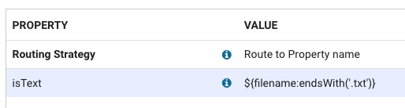
Routing strategy
Click on the value for the only required property, Routing Strategy, and its options are presented in the Value pulldown menu. The information in the tooltips that surface also help in explaining the options.

Leave the Routing Strategy property set to Route to Property name. This will guarantee that any FlowFile meeting the criteria from the isText custom property will be routed to a newly created dynamic relationship.
Verify relationships
Notice in the Relationships tab that we now have a new dynamic relationship called isText in addition to the existing unmatched one.
Rename the processor
To make our dataflow more readable, rename the processor to something more meaningful. In the Settings tab and change the Name to Verify Text File and be sure to click Apply to save the all the processor configuration changes you have made.
Resolve the relationships
It might sound like we are about to become marriage counselors, but we really just need to address the 2 relationships from RouteOnAttribute, so let's make sure we have a visual component for each to be connected to.
Happy path
In our requirements, the "happy path" is to continue to process the .txt files. Add another RouteOnAttribute processor, rename it to Check fileSize, and then create a connection to it from the prior processor's isText relationship. Yes, you can do this without any hand holding! It should look like this once you have completed these steps.
Address errors
For fun, the zip file we are testing with has at least one file inside it that is not a text file. Our requirements simply stated to set these aside for "additional investigation". These errors are in the unmatched relationship we reviewed previously. That is the relationship that still needs to be taken care of to get our Verify Text File processor out of its current invalid state.

We previously found out how to auto-terminate a relationship, but if we do that in this situation we will lose visibility to any FlowFile that might be assigned to this relationship. We need to connect it to another component. Maybe we can use that Funnel component type in the palette?
While SURELY NOT the intended usage of a Funnel (yes... let's tackle it in another tutorial) it is a somewhat common practice in initial dataflow construction to use a Funnel for such a reason. Drag one onto the canvas and connect the unmatched relationship to it.
If you did it right, the yellow triangle next to the Verify Text File processor changed to a red square which indicates it is not running, but that it is eligible to be started.
Run it!
Take advantage of all your hard work by starting Verify Text File (i.e. right click on it for this option to surface) and watch those 43 FlowFiles queued into it flow down into the queues backing the connections addressing the isText and unmatched relationships.
Spot-check a few of the 42 FlowFiles flowing through IsText. Afterwards, do the same to see what the single FlowFile is in unmatched.

Aha! It is a striking image of The Bard himself. Very nice!
We have done enough "additional investigation" on this image that we can simply dismiss it. A very useful feature, especially when initially developing, testing, and debugging a dataflow, is to delete the contents of a queue. Simply right click on the queue and select Empty Queue from the bottom of the contextual menu that surfaces.
Maybe Hamlet could have said, "To queue, or not to queue: that is the question", but who are we to doubt the accomplished Bill Shakespeare?
As a reminder, our transform requirements include classifying the text files based on their content's byte count. The following categories were declared.
small– when file size is <= 75 KBmedium– files > 75 KB and <= 150 KBlarge– any file > 150 KB
Take care of the small files
We can address the small files scenario first and then later repeat it for medium and large sized ones.
RouteOnAttribute (again)
Let's use the RouteOnAttribute processor that we already added to the flow and renamed to Check fileSize to tackle the first part of this. Like before, create a dynamic property named small with the following expression language.
${fileSize:le(75000)}It should look like the following.
Verify a dynamic relationship with the same name is now present.
This only routes the small files down a specific relationship. We still need to add an attribute to the FlowFile to be leveraged at the end of the dataflow.
UpdateAttribute
You might think we can just use something that would be called AddAttribute, but no such processor exists. Fortunately, UpdateAttribute comes to the rescue and acts in an up-sert model by either creating or updating FlowFile attributes.
Add one to the flow, rename it to Set contentSize to small, and then make a connection to it with the small relationship from Check fileSize. This part of the dataflow should resemble the following.
The Dynamic Properties section of the UpdateAttribute documentation explains we can simply add a new custom property whose name will be used to create an attribute with the same name. The property value will then become the value of the attribute as well.
Add a property named contentSize and set it to small.
Repeat for medium and large files
Perform the same general steps to account for the medium and large scenarios.
RouteOnAttribute
Add a medium property to the existing Check fileSize processor with the following expression language.
${fileSize:gt(75000):and(${fileSize:le(150000)})}And another property called large with the following value.
${fileSize:gt(150000)}Three custom properties should now be present.
Save and reopen the Edit Processor pop-up and verify all 3 dynamic relationships are present.
UpdateAttribute
Reuse the pattern from the small relationship for this step. Create two new UpdateAttribute processors for the medium and small relationships. Modify the UpdateAttribute processors with the appropriate medium or large value for a contentSize custom property.
This part of the dataflow should be similar to the following now.
Hovering over the yellow triangle in Check fileSize should indicate one remaining configuration issue.
Any FlowFiles going to the unmatched relationship would indicate we have a logic problem in Check fileSize. Connect it to the Funnel we previously added to the dataflow. This will allow us to notice any bugs that might surface.
Run it!
Start Check fileSize to see the 42 FlowFiles queued into it flow down into the queues backing the connections addressing the small, medium, and large relationships.
Perfect results so far! All 42 FlowFiles left the isText queue, were processed through Check fileSize (with 0 unmatched issues) and were distributed across the 3 relationships you created.
You've already tackled the E and T of the ETL pipeline requirements, so time to finish up the L and wrap the tutorial up!
Route back to a single processor
Add a PutS3Object processor on the canvas and connect all 3 of the Set contentSize to ... processor's success relationships to it.
This shows that a single processor can tackle connections from multiple processors. In fact, it could tackle multiple relationships on each connection if that made sense for a flow. This is technically sound, but there is a generally more preferred approach to a scenario like this.
A better use of a funnel
Previously we used a Funnel as a way to set aside FlowFiles to allow us to investigate them further. A more appropriate use of a Funnel is the situation we have above – multiple connections with similar data that have subtle differences such as attribute values.
First, delete the 3 connections entering PutS3Object.
Now, add a Funnel just above PutS3Object and rebuild the 3 previous connections. This time connect them to the new Funnel. Finish up the flow by making a connection from the Funnel to the PutS3Object processor.
Notice that there are no relationship choices when connecting the Funnel to PutS3Object. All FlowFiles flow into the connection being made.
For those asking... yes, another connection from that same Funnel can be made to additional processors. Try it for fun, but remember to remove the extra processor and connection when you are done experimenting.
The bottom part of your dataflow should look like this now. Notice the unnamed connection (remember, there are no named relationships to choose from) from the Funnel.
Start Set contentSize to small and see its 2 FlowFiles now queued up between the Funnel and PutS3Object. Run Set contentSize to medium and see that total go to 30. Finally, run Set contentSize to large to allow all 42 FlowFiles to be queued up below the Funnel.
Persist the files
For you to finalize the configuration of the PutS3Object processor, you will need an existing S3 bucket and appropriate credentials to write to it. If you do not have these available you can still complete most of this final step. You just won't be able to run the processor, but you'll still get the gist of what's happening.
BYOB
As just mentioned, you will need to Bring Your Own Bucket to this party.
Here is my lestermartin.blog S3 bucket located in the us-east-2 (Ohio) AWS region that I will be testing with. I have an empty "folder" named the-bard where the 42 files will be written to.
Go to the Edit Processor pop-up and select the Properties tab. Enter YOUR S3 bucket name as the value for the Bucket property. Choose the appropriate value for Region. Enter the following for Object Key.
the-bard/${contentSize}/${filename}You can change the-bard to anything you like and the folder does not have to already exist in your S3 bucket. The contentSize and filename FlowFile attributes will be dynamically substituted for each FlowFile entering into the processor.
Here is an example of what the 4 properties that we need to focus on for this tutorial should look similar to.
Go ahead and click on Apply to save these configurations. Then open Edit Processor again and ensure you are on the Properties tab.
Controller Services
The last property in the list above is for a Controller Service. The Apache NiFi Documentation states Controller Services "share functionality and state" for the benefit of processors. Here are two examples of these.
- AWSCredentialsProviderControllerService - a Controller Service that maintains common configuration information for a specific AWS account
- DBCPConnectionPool - a Controller Service that maintains a pool of database connections that can be utilized by processors
It is easy to see that common configuration properties as well as common runtime services are beneficial for maintainability as well as performance & scalability. These Controller Services also keep sensitive configuration information secured.
Further discussion on this component type is beyond the scope of this tutorial. Fortunately, the answer to the question of "when do I need to create a Controller Service" is easily answered. If you NEED one, you'll find out easily enough as it will expose itself as a required parameter setting in one of your processors.
Back on the Properties tab, click on the vertical ellipsis to the right of the AWS Credentials Provider Service property and then select Create new service.
This will bring up an Add Controller Service pop-up with the appropriate type preselected. Click Add in the bottom right corner to proceed.
You will return back to the Properties tab with the new property selected. Click the vertical ellipsis again and select Go to Service this time.

Click Yes when prompted to save processor changes. On the Controller Services page that renders, click on the vertical ellipsis on the far right of the entry and then Edit.
On the Edit Controller Service pop-up navigate to the Properties tab. There are multiple ways to authenticate to AWS, but in my scenario I am modifying the Access Key ID and Secret Access Key values to my own private values. This is the step you may not be able to complete if you do not have this preconfigured.
Click Apply to save the configuration changes and back on the Controller Services page click the vertical ellipsis again. This time select Enable.
Click on Enable in the lower right corner on the Enable Controller Service pop-up which will output the following.
Click Close in the lower right corner to return to the Controller Services page where you will click on Back to Processor in the upper left of the page. That takes you back to Edit Processor (see... I told you we need to tackle Controller Services in another tutorial).
If Apply is enabled, click on it. Otherwise, click on Cancel as you likely saved the configuration changes to the processor itself previously.
Back on the canvas you'll see that the only configuration issues remaining are related to handling the 2 relationships this processor produces.
Auto-terminate the success relationship as this is the last thing we will do in our dataflow. Create a new Funnel and make a connection to it for the failure relationship so that we can be aware of any problems that may occur.
Write it!
Now, start PutS3Object and verify all 42 FlowFiles left the incoming connection and we see the number 42 in the last metric which indicates that it successfully wrote all 42 files to the S3 bucket.
Trust, but verify
Double-check to see if the files appropriately made it to your S3 bucket.
3 folders
The small, medium, and large folders were created.
2 small files
28 small files

12 large files
10,000 foot view
If you zoom out until you see the entire flow, it likely looks similar to this.
Datavolo's low-code solution is definitely different from just opening a code editor and starting to program in your favorite language. The real trick to get used to is knowing what your overall flow is (i.e. the forest) and being able to mentally zoom in and realize you are working with steps, sometimes micro-steps, (i.e. the trees) to fulfill the logic your dataflow needs.
Less is more
It is easy to imagine that anything much more complex than our simple use case in this tutorial could visually be very complex. There are strategies, including using Process Groups like we nested our work into, to make dataflows more readable and maintainable and to even support multiple development teams tackle different aspects of a complete dataflow.
One rule of thumb is that the fewer processors a dataflow has, the better it will perform. One refactoring opportunity for the flow you just created would be to combine the work of the two RouteOnAttribute processors into one. Feel free to try to do this on your own if you are up for it.
We are here to help
There are literally hundreds of processors to allow you to tackle so many possible solutions, but don't let that overwhelm you. Count on Datavolo to help you be a 10x Data Engineer for AI. Additional tutorials, Showcase Flows, webinars, podcasts, and more are being constantly created and updated to help you on your journey.
Congratulations, you've successfully built your first dataflow with Datavolo!
EXPLAIN SPECIFICALLY WHAT WAS DONE IN THIS TUTORIAL
What's next?
Check out some of these codelabs...
Further reading
- Something
- Another thing
- Maybe even another